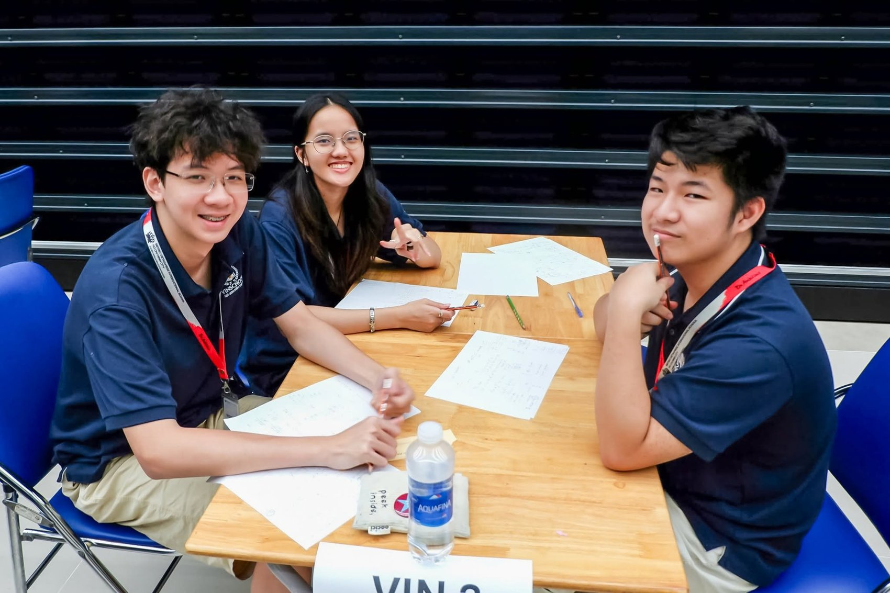

Student · Aspiring Researcher
Understanding Life.
Improving Lives.
Hi, I'm Khoi Tran — curious about why we age, what happens inside our cells, and how science might help people live healthier lives.
Cambridge A Level student at Vinschool Central Park, exploring genetics, molecular biology, mathematics, and scientific research.

Khoi Tran · Student & aspiring researcher

A question that matters
Why do we age?
My grandfather taught me to appreciate beautiful solutions in mathematics. Years later, he inspired a different kind of curiosity—one that draws me toward understanding life itself.
Watching his abilities change with age made me wonder what happens inside our bodies over time—and whether science can help us remain healthy for longer.
Read my story →Leadership & community
Curiosity grows when shared.
From mentoring peers in mathematics to organizing science outreach and community projects, I enjoy turning curiosity into shared learning.
Explore my activities →